Overhaul
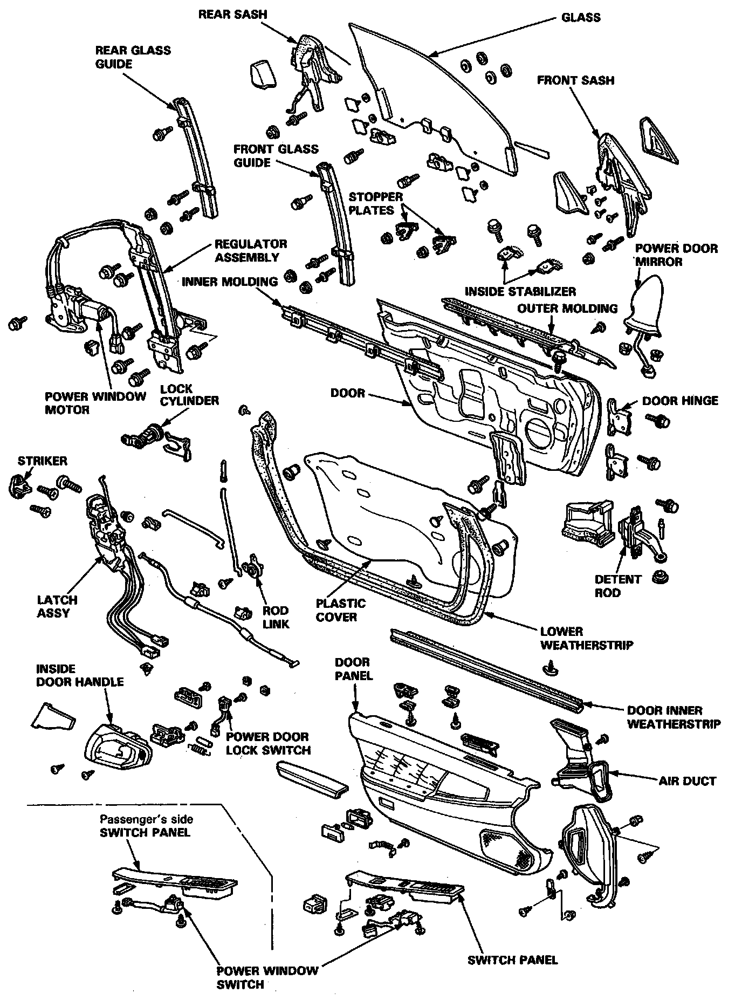
DISASSEMBLY
NOTE: Lower the window fully.
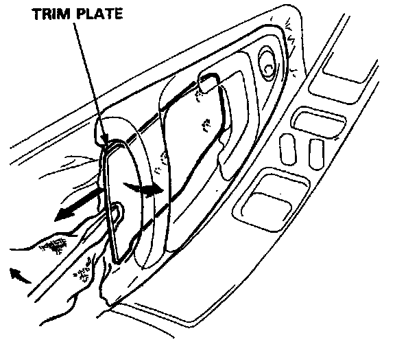
1. Carefully pry out the trim plate with a flat tip screwdriver as shown.
NOTE: To prevent damage to the trim plate, wrap the end of the screwdriver with a shop towel.
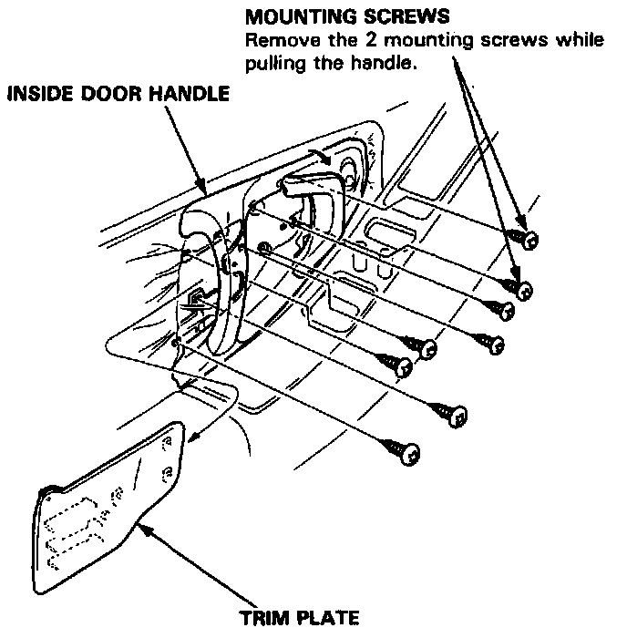
2. Remove the trim plate by pulling it backward and remove the inside door handle screws.
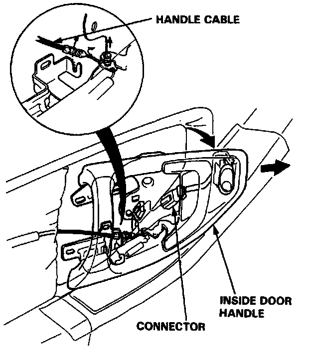
3. Disconnect the connector and the handle cable, then remove the inside door handle by pulling it forward.
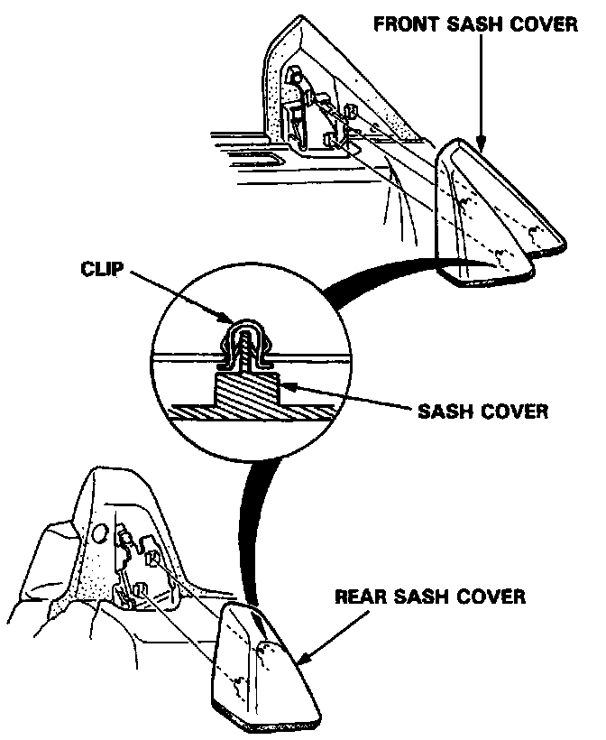
4. Carefully remove the front and rear sash covers.
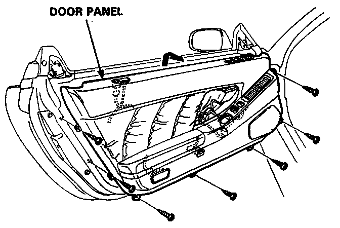
5. Remove the 7 door panel screws. Lift the door panel straight up off the sill.
Disconnect the connectors:
- Trunk lid opener
- Power window/door mirror
- Courtesy light
- Security alarm
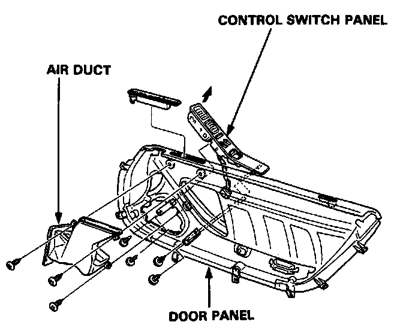
6. Remove the control switch panel and air duct, from the door panel as required.
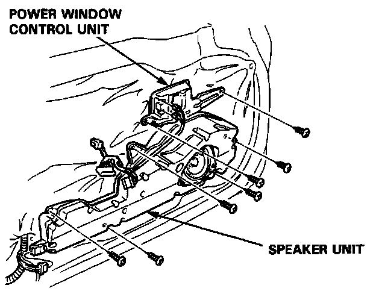
7. Remove the mounting screws and disconnect the connectors, then remove the power window control unit and speaker.
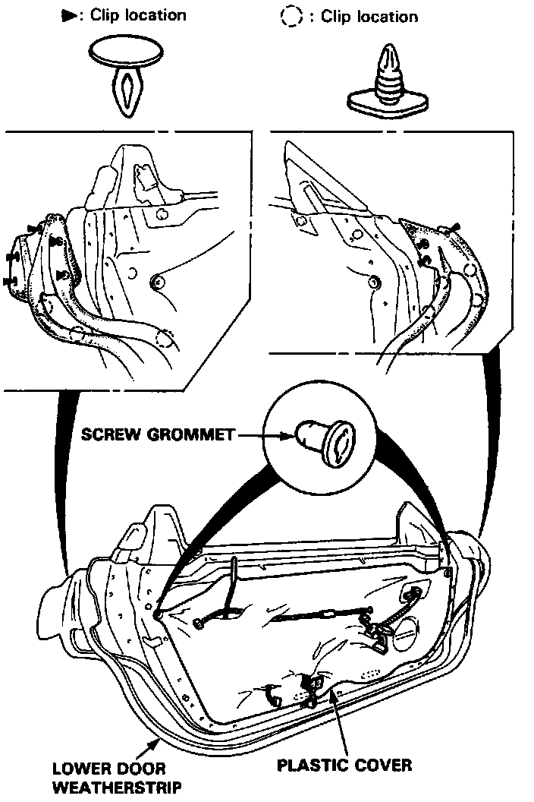
8. Remove the lower door weatherstrip retaining clips, then pull off the lower door weatherstrip. Remove the screw grommets and carefully remove the plastic cover.
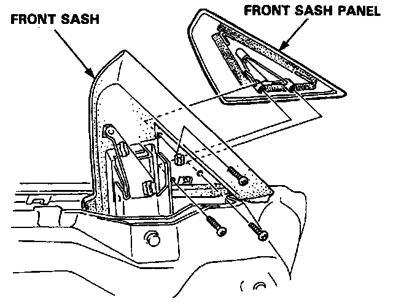
9. Remove the 3 mounting screws, then remove the front sash panel.
10. Remove the outer molding mounting screw and detach the crips, then remove the outer molding.
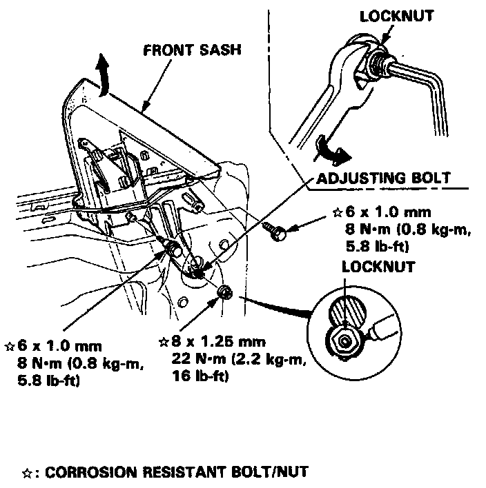
11. Remove the 2 mounting bolts and locknut, then remove the front sash.
NOTE:
- Hold the adjusting bolt with a hex wrench when removing the locknut.
- Scribe a line around the locknut to show the original adjustment.
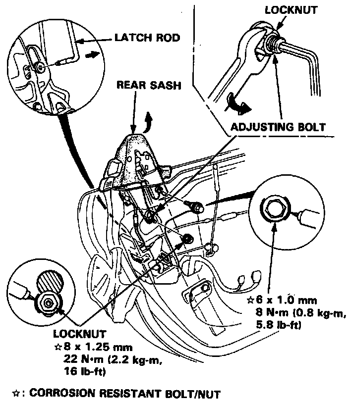
12. Remove the mounting bolt and locknut. Remove the rear sash, then disconnect the latch rod.
NOTE:
- Hold the adjusting bolt with a hex wrench when removing the locknut.
- Scribe a line around the locknut to show the original adjustment.
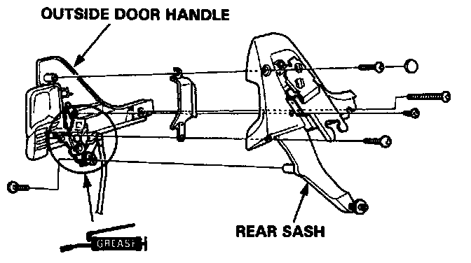
13. To replace the outside door handle, remove the 5 screws from the rear sash.
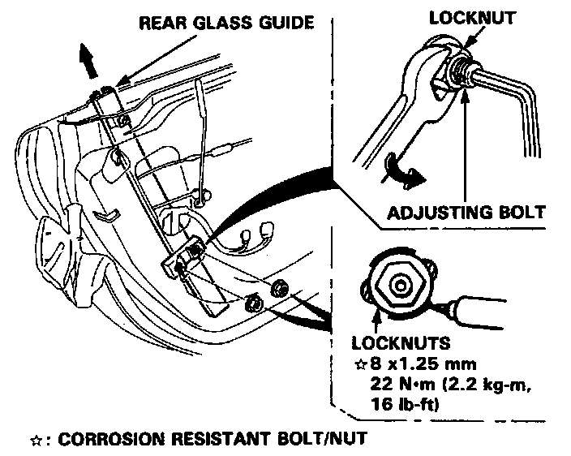
14. Remove the 2 locknuts, then remove the rear glass guide.
NOTE:
- Hold the adjusting bolt with a hex wrench when removing the locknuts.
- Scribe a line around the locknuts to show the original adjustment.
15. Before removing the latch assembly and lock cylinder, raise the window fully by connecting a 12 V battery to the regulator motor.
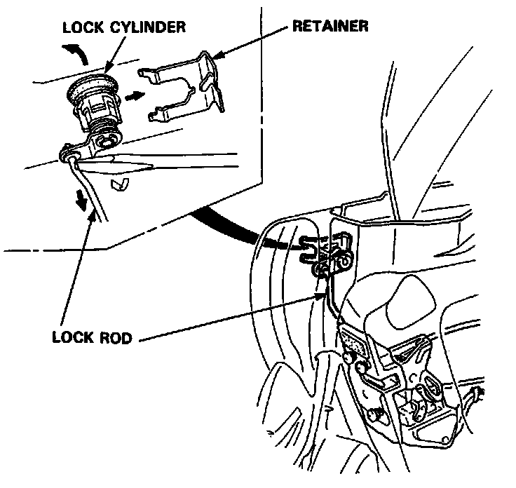
16. Remove the retainer by sliding it forward. Pry the lock rod out its joint using a flat tip screwdriver, then carefully remove the lock cylinder.
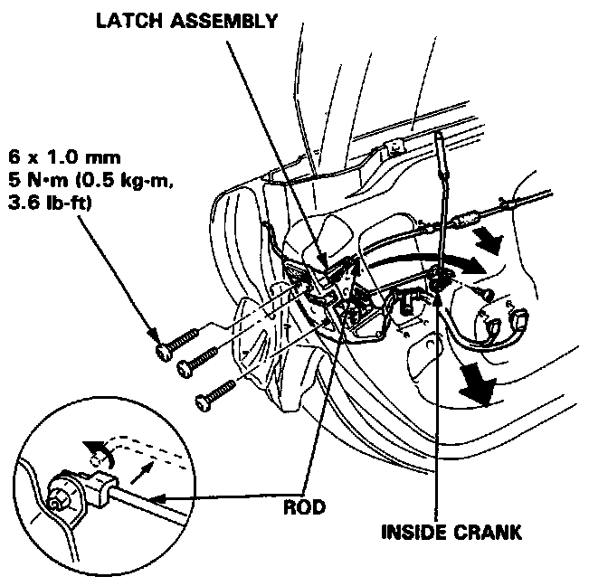
17. Disconnect the rod and remove the inside crank. Remove the cable and harness clips. Remove the mounting screws, then remove the latch assembly through the hole in the door.
NOTE: Take care not to bend the lock rod.
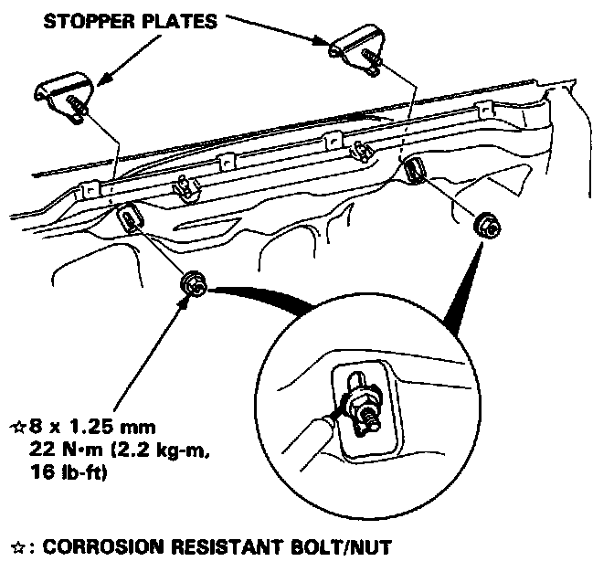
18. Lower the window and remove the mounting nuts, then remove the stopper plates.
NOTE:
- Lower the window by connecting a 12 V battery to the regulator motor.
- Scribe a line around the mounting nuts to show the original adjustment.
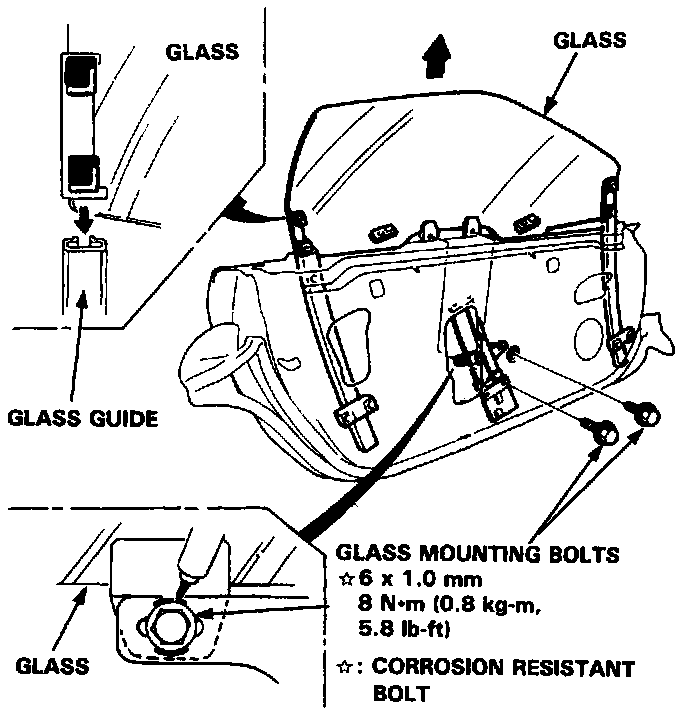
19. Carefully lower the window until you can see its mounting bolts, then remove the bolts. Pull the glass out through the window slot.
NOTE:
- Lower the window by connecting a 12 V battery to the regulator motor.
- Scribe a line around the mounting bolts to show the original adjustment.
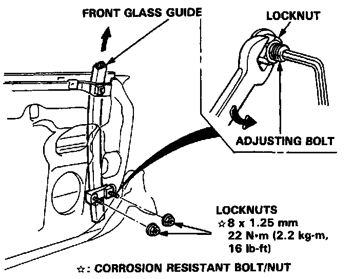
20. Remove the 2 locknuts, then remove the front glass guide.
NOTE:
- Hold the adjusting bolt with a hex wrench when removing the locknuts.
- Scribe a line around the locknuts to show the original adjustment.
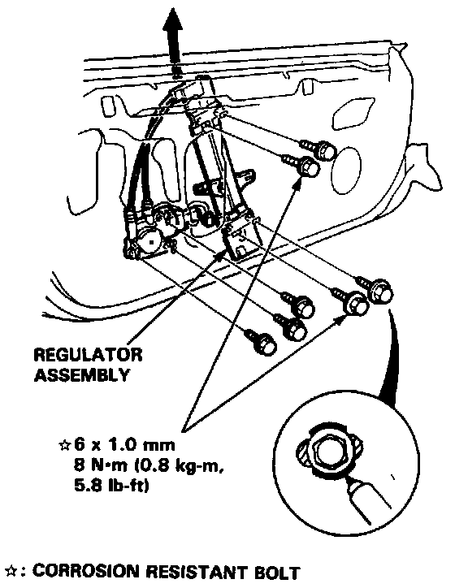
21. Remove the 4 regulator mounting bolts and loosen the 3 motor bolts, then take out the regulator assembly through the window slot.
NOTE:
- Scribe a line around the mounting bolts to show the original adjustment.
- Take care not to bend the cable.
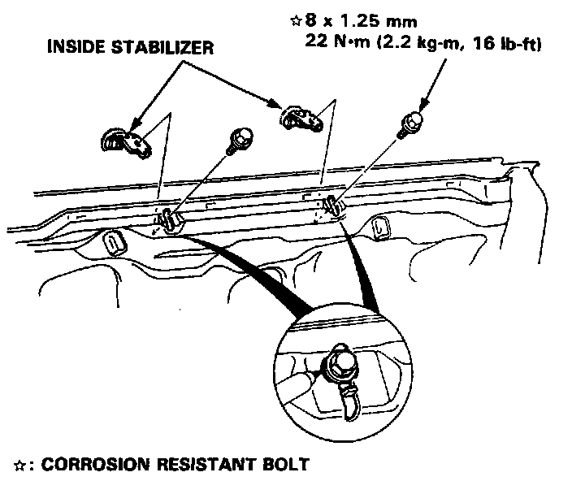
22. Remove the mounting bolts, then remove the inside stabilizers from the door panel.
NOTE: Scribe a line around the mounting bolts to show the original adjustment.
ASSEMBLY
Assemble the door in the reverse order of disassembly, and also:
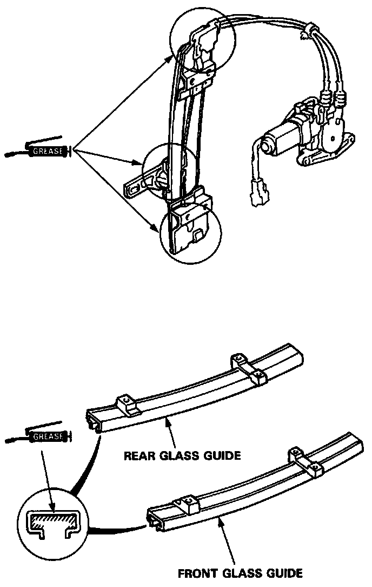
1. Grease all the sliding surfaces of the window regulator and the glass guides where shown above.
2. Roll the glass up and down to see if it moves freely without binding. Also make sure that there is no clearance between the glass and door upper weatherstrip when the glass is closed. Adjust the position of the door glass as necessary.
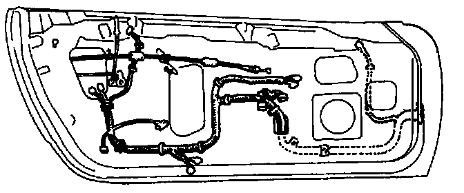
3. Attach the wire harness correctly on the door.
NOTE: Make sure the wires are not pinched.
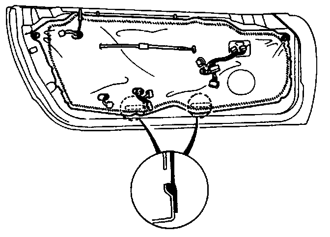
4. When reinstalling the plastic cover, apply adhesive along the edge where necessary to maintain a continuous seal and prevent air/water leaks.
NOTE: Do not fill up with adhesive.